<mat-toolbar color="basic">
  <span class="header">YouTube Music Player</span>
  <!-- This fills the remaining space of the current row -->
  <span class="fill-remaining-space"></span>
<app-searchform></app-searchform>

  <!-- This fills the remaining space of the current row -->
  <span class="fill-remaining-space"></span>

  <button mat-button routerLink="/">Player</button>
  <button mat-button routerLink="playlists">Manage Playlists</button>
</mat-toolbar>

<router-outlet></router-outlet>
